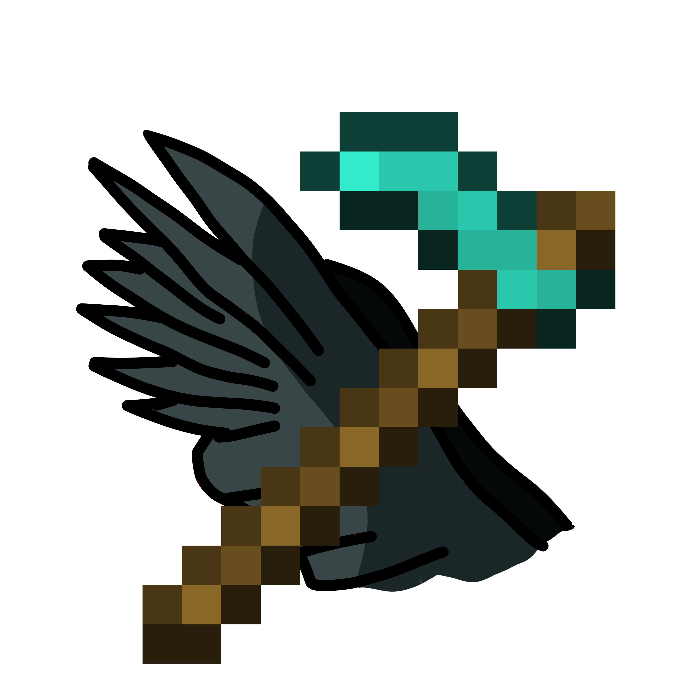
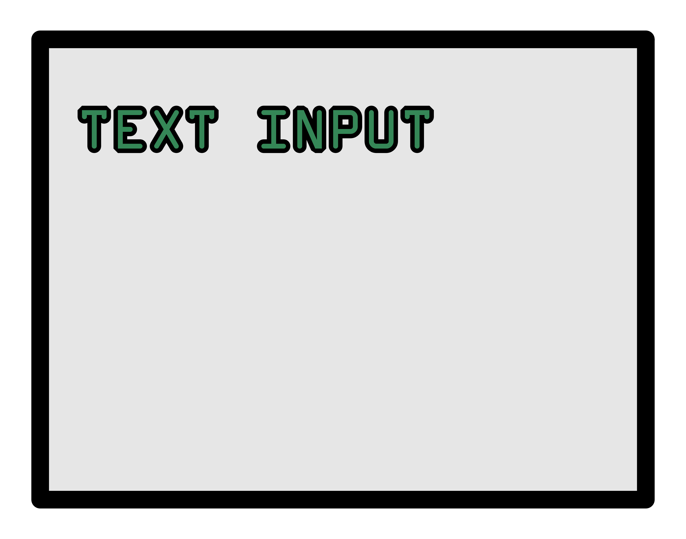
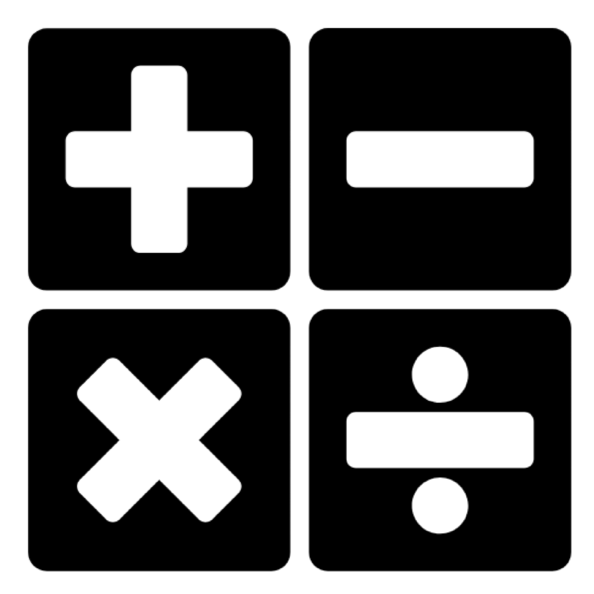

A minecraft server plugin designed to expand farming's utility and interactivity.
Did not finish completley finish, however the core of the plugin complete.
This is primarily here as a demonstration of the level of programming I am capable of.
The images present are links to respective repositories.

Text Adventure Game engine and pair of games made for a Computer Science lab project.
First game is a narrative Vampire's Castle game. The second is a fishing game taking
names from fauna in the Subnautica franchise.

